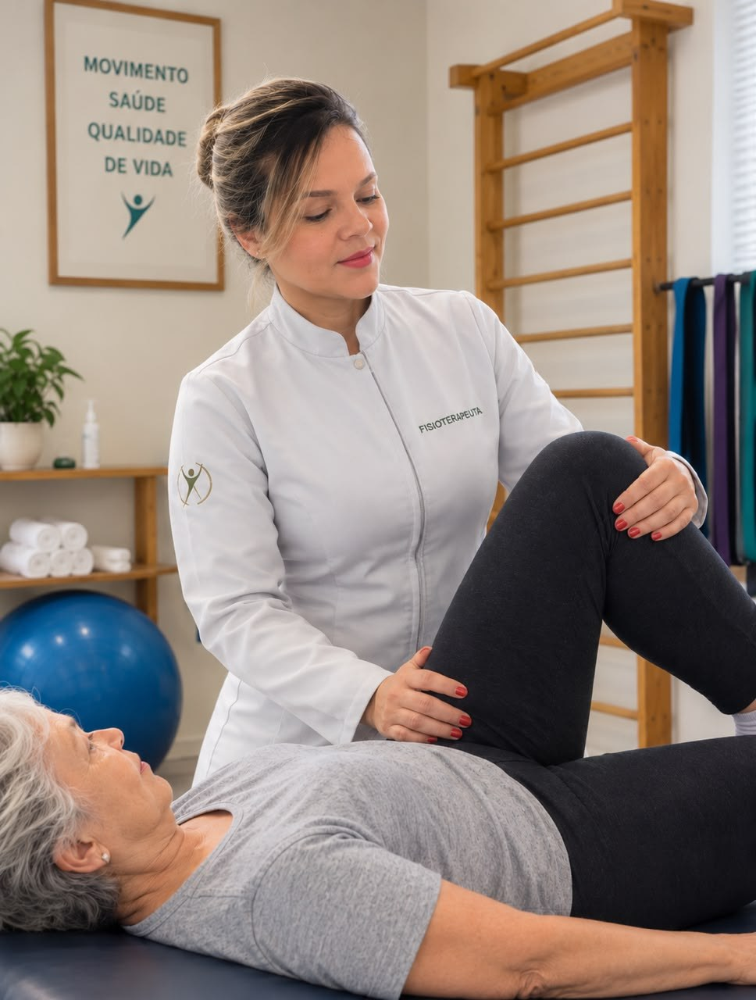
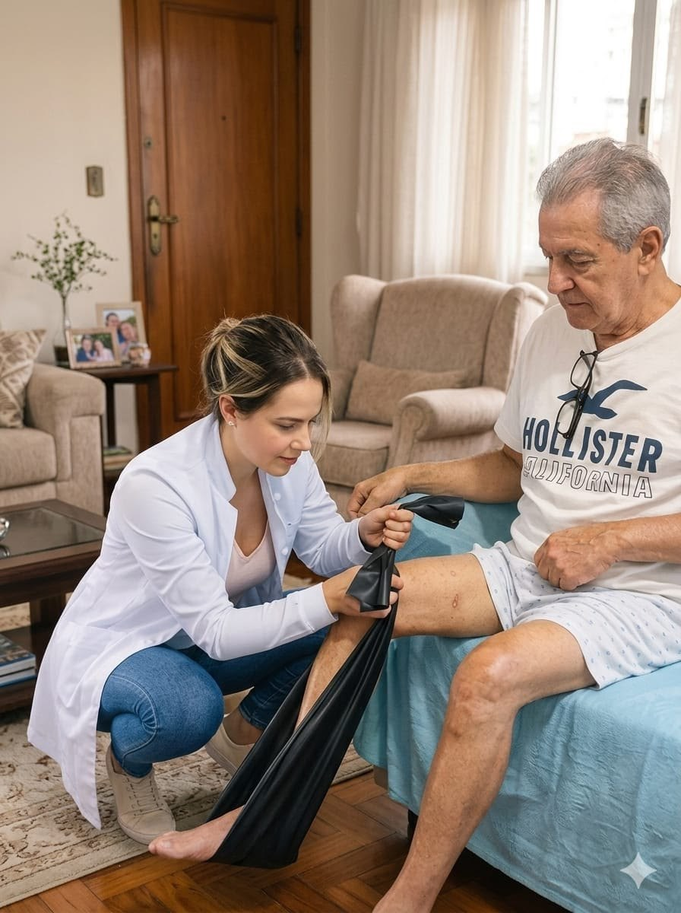
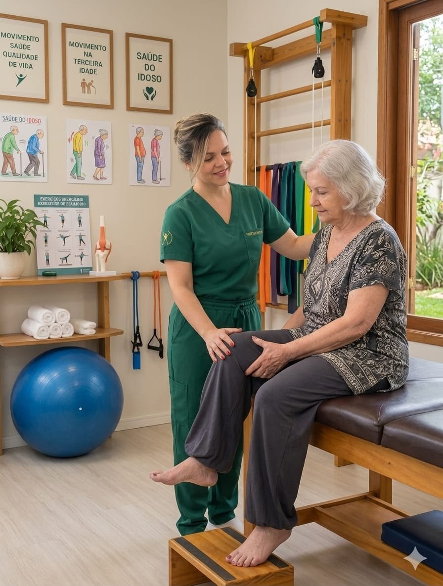
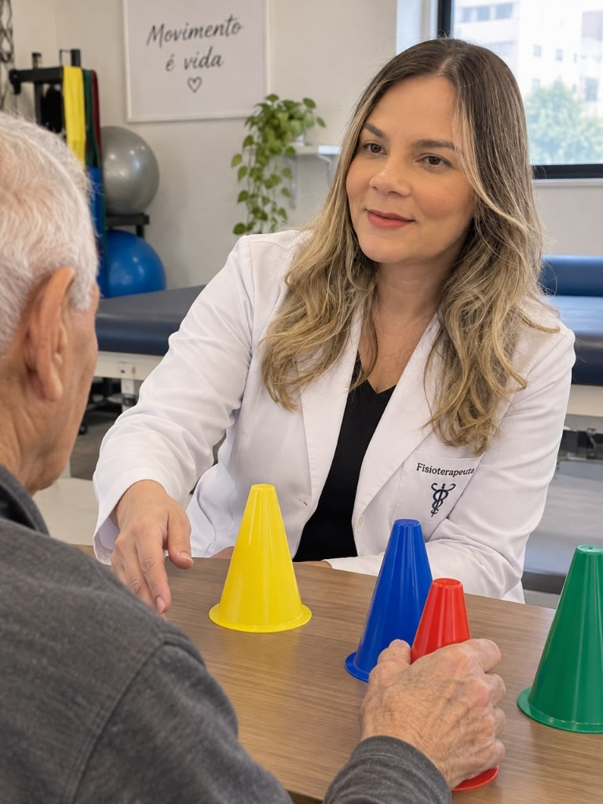
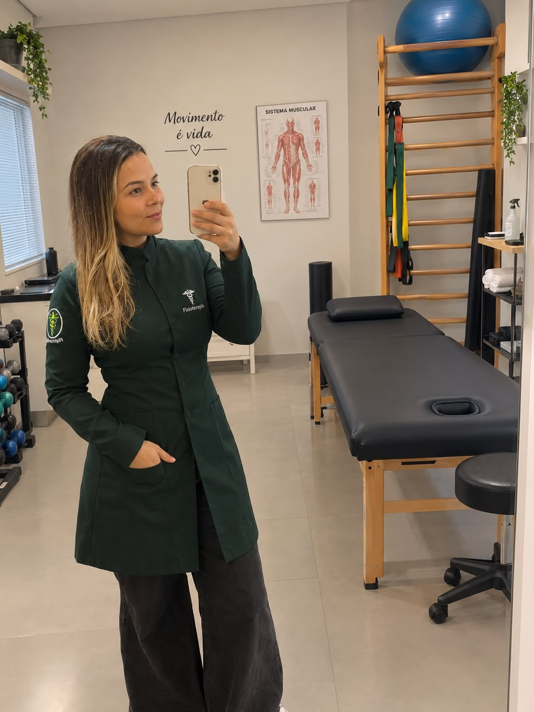

Cuidado fisioterapêutico humanizado e 100% individualizado para idosos, reabilitação neurofuncional, pós-operatórios e alívio de dores na Zona Sul e toda a capital de São Paulo.

Avaliações no Google
Atendimento Humanizado no Lar
Profissional Registrada & Habilitada
Cobertura na Capital Paulista
Mais tranquilidade para a família, sem estresse com trânsito ou salas de espera cheias, com reabilitação no ambiente real do paciente.
Sem desgaste com deslocamento, escadas de clínicas ou trânsito de São Paulo. O paciente é atendido onde mais se sente seguro.
Duração completa dedicada unicamente a um paciente por vez. Sem revezamento de aparelhos e com atenção total a cada movimento.
Adaptação direta para a rotina da casa: treino para levantar da cama, sentar no sofá, subir os degraus da própria casa e prevenir quedas.
A Dra. Priscila leva todos os equipamentos necessários para a sessão: faixas elásticas, recursos analgésicos e aparelhos terapêuticos.
Os familiares e cuidadores acompanham de perto cada avanço e recebem orientações práticas para manter a evolução durante a semana.
Fornecemos recibo detalhado com CREFITO e relatório para você solicitar reembolso no seu plano de saúde (convênio médico).
Planos de tratamento desenvolvidos sob medida para restaurar a independência, aliviar a dor e recuperar a qualidade de vida.
Cuidado humanizado e específico para a terceira idade, focado em recuperar a força e preservar a autonomia no dia a dia.
Estímulo constante para o reaprendizado motor em pacientes neurológicos, promovendo dignidade e independência funcional.
Recuperação segura após cirurgias ortopédicas, fraturas e lesões articulares, acelerando o retorno aos movimentos naturais.
Técnicas manuais e exercícios terapêuticos direcionados para aliviar dores lombares, hérnias de disco e tensões crônicas.
Exercícios funcionais com carga progressiva e segura, combatendo a perda de massa muscular (sarcopenia) e rigidez articular.
Acompanhamento periódico para manter a vitalidade, evitar o sedentarismo e prevenir a perda de mobilidade com o envelhecimento.
Veja um pouco de como são realizadas as sessões de fisioterapia domiciliar personalizadas.

Reabilitação ortopédica e fortalecimento com foco na autonomia, alívio de dores e recuperação no ambiente real do paciente.

Atenção humanizada e especializada para idosos: treino de marcha, prevenção de quedas, equilíbrio e manutenção da vitalidade.

Estímulo motor e reaprendizado funcional para pacientes neurológicos e cadeirantes, promovendo dignidade e autonomia.

Com formação sólida e dedicação exclusiva à reabilitação no ambiente do paciente, meu trabalho é guiado pela empatia, respeito aos limites de cada pessoa e busca constante pela recuperação da autonomia e da qualidade de vida.
Acredito que a verdadeira reabilitação acontece quando o paciente se sente acolhido e seguro em seu próprio lar, ao lado de sua família, com um plano terapêutico feito sob medida para sua história.
Veja como é fácil e prático receber a fisioterapia no conforto da sua residência.
Você entra em contato pelo WhatsApp, conta o histórico do paciente e tiramos todas as suas dúvidas iniciais.
Definimos o melhor dia e horário que se encaixe confortavelmente na rotina do paciente e da família.
A Dra. Priscila vai até a sua casa, faz a avaliação motora, de marcha e dor, e traça os objetivos de tratamento.
Iniciamos as sessões personalizadas com acompanhamento contínuo dos resultados e orientações para a família.
Atendimento prioritário em toda a Zona Sul de São Paulo e regiões próximas da capital, garantindo pontualidade e dedicação.
Podemos verificar a viabilidade de agenda para atender seu familiar em outros bairros de São Paulo com total pontualidade.
Consultar Meu Bairro no WhatsAppClassificação máxima de 5.0 estrelas no Google com avaliações verificadas de famílias atendidas.
Classificação máxima de 5.0 estrelas no Google • Movimento & Alívio
"Excelente profissional! Cuidou da recuperação do meu pai idoso com uma paciência e um carinho admiráveis. Em poucas semanas ele já estava caminhando com muito mais segurança. Recomendo de olhos fechados!"
"A Dra. Priscila é super pontual, atenciosa e traz todos os aparelhos até em casa. Fez toda a diferença na minha reabilitação pós-cirurgia de joelho. O atendimento em casa não tem preço!"
"Profissional muito humana e dedicada. Minha mãe teve AVC e a evolução com a fisioterapia neurofuncional foi incrível. O carinho e a técnica dela devolveram a esperança da nossa família."
Principais esclarecimentos sobre como funciona o atendimento domiciliar em São Paulo.
A Dra. Priscila vai até a sua residência com horário agendado. É realizada uma avaliação física minuciosa, anamnese completa do histórico clínico, testes de mobilidade, equilíbrio e força. A partir disso, é estruturado um plano de reabilitação 100% individualizado para as necessidades do paciente.
Sim! Você não precisa se preocupar com nada. A Dra. Priscila leva todos os equipamentos e recursos necessários para o atendimento (faixas elásticas, recursos de eletroterapia/analgesia, pesos terapêuticos, cones e materiais para treino de equilíbrio e marcha).
O atendimento é particular para garantir sessões completas, dedicadas e sem pressa. No entanto, emitimos recibo e relatório fisioterapêutico oficial com CREFITO para que você solicite o reembolso junto ao seu convênio médico (Bradesco, SulAmérica, Amil, Porto Seguro, etc.).
Atendemos prioritariamente a Zona Sul de São Paulo (Pedreira, Santo Amaro, Interlagos, Campo Belo, Brooklin, Moema, Vila Mariana, Jabaquara, Socorro e imediações), além de outras regiões da capital sob consulta prévia.
Basta clicar no botão de WhatsApp aqui no site ou mandar uma mensagem para (11) 99808-5565. Conversamos sobre o caso do paciente, verificamos a disponibilidade de horários e agendamos a visita.